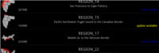

Help Manual
~~~ General Information: ~~~
MX Mariner is a basic chart plotting program for Android.
MX Mariner will retrieve and display a base map (Road Map or Satellite) from the internet if a data connection is available.
Base map data will be cached and viewable when off-line
Raster charts can be downloaded and installed in app. Once
installed, charts can be overlayed over the base map and are available
off-line, without a data connection.
The screen will stay on when you are in the main chart/map view and will not power off automatically.
~~~ Installing chart regions ~~~
Currently, all US NOAA raster charts are available to download from within the MX Mariner application.
Android Menu button --> Settings --> Install Charts
All
NOAA raster charts are divided into 20 regions ranging from 68MB to
538MB in size. The regions will be stored in the /sdcard/mxmariner
directory on your device. On most android devices, this directory is an
SD Card while others it is built in storage. You will need adequate
storage space to download the charts you want to use.
Simply tap on the region you would like to download to your device.
It's recommend to download regions when connected to wifi rather than through your cell service data plan.
Pushing the back button during the download process will cancel the download.
You can push the home button on your device to launch other programs while the region download continues.
~~~ Uninstalling chart regions ~~~
Android Menu button --> Settings --> Install Charts
Long press on an installed region and choose "OK" to delete a chart region
Region data will be completely removed from device SD Card
~~~ Updating chart regions ~~~
Menu button --> Settings --> Install Charts
When an updated region file is available for an an installed
region, the region will be labeled with an update available tag in
yellow
Tap on region to download update
 ~~~ Using charts ~~~
After installing chart region(s) go back to the main chart/map
view, then choose Menu --> Display and select the Chart Region option
to choose the region you would like to view/use.
When a chart is NOT available or installed for your current view and you are connected to the Internet a base map will be shown.
~~~ Display Settings and Features: ~~~
The chart/map display settings can be quickly changed by pressing Menu --> Display
The Chart Layer (Raster Charts) can be toggled on or off revealing or hiding the base map.
The Chart Region can be changed. This will select which raster chart region is to be shown on the chart/map.
Screen
Brightness can be changed from "Day", "Dusk", or "Night" modes. This
controls the intensity of the backlight when viewing the chat/map.
To adjust the intensity of the backlight for each mode, go to Menu --> Settings --> View.
Four options are available for Day, Dusk, and Night Backlight
levels. Change the mode intensity by dragging the slider and pushing
"Set".
The base map can be toggled from "Road Map" to "Satellite" in Menu --> Settings --> View --> Base Map Style
Chart outlines can be toggled on/off in: Menu --> Settings --> View --> Chart Outlines
~~~ Cart panning, zooming, measuring: ~~~
Zoom chart by using zoom buttons  or pinch to zoom with fingers
Zoom to location by double tapping on chart
Pan chart by dragging chart with fingers
When gps position is available a bearing, distance and
position measure tool will appear automatically when touching and/or
panning chart.
or pinch to zoom with fingers
Zoom to location by double tapping on chart
Pan chart by dragging chart with fingers
When gps position is available a bearing, distance and
position measure tool will appear automatically when touching and/or
panning chart.
 Zoom buttons can be turned on/off in: Menu --> Settings --> View --> Zoom Buttons
Zoom buttons can be turned on/off in: Menu --> Settings --> View --> Zoom Buttons
~~~ GPS follow: ~~~
Enable location on your device Settings --> Location & Security --> Use GPS satellites (checked)
Enable gps follow by pushing the follow button. Note: Follow button will fade indicating that follow mode is active.
Disable gps follow by zooming or panning chart. Note: Follow button will un-fade when follow mode is disengaged.
When speed and course, position is indicated by red ship oriented according to present course.
When no speed and course, position is indicated by red circle .
When gps accuracy is low, approximate error is indicated in
chart view by semi-transparent grey circle around approximate position.
~~~ Measure Tool ~~~
Push the extra functions button to show the extra function buttons.
Pan/Zoom the chart to where you would like to start your measurement.
Next, push the measure button. Pan/Zoom the chart to where you would like to measure to.
Finish measuring by pushing the return button
~~~Adding Waypoints ~~~
Push the extra functions button to show the extra function buttons.
Pan/Zoom the chart to where you would like to place your
waypoint OR push the gps follow button to place a waypoint at your
current position.
Next, push the add waypoint button.
You are then presented with a dialog where you can name your waypoint,
add a description, change the icon, or change the latitude/longitude
Push OK and the map will be centered on the new waypoint.
~~~Editing / Deleting Waypoints ~~~
Tap on the waypoint icon on the map and an edit dialog will be presented.
You can rename your waypoint, change the description, change
the icon, change the latitude/longitude, or choose to delete the
waypoint.
Push OK and if "delete" was not checked then the map will be centered on the edited waypoint.